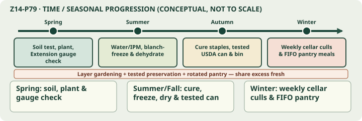

Z14-P79 · Food production and preservation · New manuscript
Integrate seasonal gardening, tested preservation, and rotated pantry stocks year-round
Coordinate spring planting, summer/autumn tested preservation, winter cellar monitoring, and grocery FIFO rotation into one sustainable annual household rhythm.
When it applies · Households building practical long-term food resilience in Upper Midwest and seasonal climates.
Equipment · One-page 12-month food-resilience calendar, garden bed map, USDA canning guide, and FIFO pantry list.

Actions
- Align all four seasonal phases intentionally: Spring (soil test, cool-crop seeding, dial-gauge Extension check, pantry audit), Summer (irrigation/IPM, blanch-freezing and dehydrating early surplus), Autumn (curing squash/onions/potatoes, tested USDA canning of peak harvests, cellar binning), and Winter (weekly cellar culls, FIFO pantry cooking, seed/plan review).[P01, P04, P14, P15]
- Treat home food production, tested preservation, and rotated commercial grocery staples as complementary layers—no single layer has to carry 100% of household calories when droughts, hailstorms, or power outages strike.[P01, P15]
- Record honest annual lessons (which crops thrived, which jars got eaten first, where storage temperatures drifted) so each year's household food plan grows simpler, safer, and less wasteful.[P05, P15, ED]
Failure recognition · Trying to preserve an entire winter's food supply from scratch in one chaotic September weekend without calibrated gear, tested recipes, or dry cellar space.[P06, P14]
Verify · Confirm 12-month calendar ties together spring gauge checks, seasonal harvests, cellar temperature monitoring, and year-round FIFO pantry rotation.[P01, P14, P15]
Stop or change course · Overwhelming harvest volumes exceeding safe tested processing time should be shared fresh with neighbors/food shelves or frozen cleanly rather than cutting canning corners.[P06, P12]
Evidence and editorial notes
- P01 · University of Minnesota Extension · Planting the Vegetable Garden (current web edition)
- Section: Site Selection, Sunlight, Frost Dates, and Short-Season Planning · Conditions: Home vegetable gardening in Upper Midwest / Minnesota (USDA Zones 3–5)
Support: Select a sunny well-drained garden site receiving 6–8+ hours of direct sunlight, match crop days-to-maturity to local last-spring and first-autumn frost dates, and separate cool-season crops from frost-sensitive warm-season crops.
Limitations: Microclimates, low frost pockets, and soil clay/sand composition shift local planting windows by weeks. · Conflicting evidence: None; anchors regional Minnesota growing-season realism.
Editorial note: Grounds Z14 regional food production and frost-window planning. · Specialist reviewer: Horticulture and university Extension specialist
Primary source · checked 2026-11-24 - P04 · University of Minnesota Extension · Harvesting and Storing Home Garden Vegetables (current web edition)
- Section: Harvesting Maturity, Curing, and Post-Harvest Handling · Conditions: Home garden root crops, winter squash, onions, potatoes, and greens
Support: Harvest crops at proper maturity during cool morning hours without bruising, cure storage crops (onions, garlic, winter squash, potatoes) at crop-specific warm/dry conditions before cold storage, and cull any nicked or diseased items for immediate use.
Limitations: A single bruised or rotting vegetable spreads decay rapidly across an entire storage bin. · Conflicting evidence: None; explains why curing precedes long cold storage.
Editorial note: Anchors harvest-to-storage quality gates in Z14. · Specialist reviewer: Post-harvest horticulture specialist
Primary source · checked 2026-11-24 - P05 · University of Minnesota Extension · Harvesting and Storing Home Garden Vegetables (current web edition)
- Section: Root-Cellar and Cold-Storage Temperature/Humidity Zones · Conditions: Basements, root cellars, unheated porches, and insulated cold bins
Support: Match stored produce to distinct storage regimes: cold-moist (32–40°F, high humidity for carrots/beets/cabbage), cool-moist (45–50°F for potatoes), cold-dry (32–35°F dry for onions/garlic), and cool-dry (50–55°F dry for winter squash); separate ethylene-producing apples from sensitive vegetables.
Limitations: Storing potatoes below 40°F converts starch to sugar; freezing temperatures ruin unhardened stored roots. · Conflicting evidence: None; prevents treating one basement temperature as universal for all crops.
Editorial note: Core root-cellar zoning and monitoring evidence in Z14. · Specialist reviewer: Post-harvest horticulture and food storage
Primary source · checked 2026-11-24 - P06 · USDA / NCHFP · USDA Complete Guide to Home Canning (2015 / current NCHFP edition)
- Section: Complete Guide to Home Canning > Principle of Tested Protocols · Conditions: All residential home canning (boiling-water and pressure canning)
Support: Treat every USDA/NCHFP tested canning recipe as a single indivisible system: food pH, piece size, liquid viscosity, jar size, headspace, processing method, pressure/temperature, time, and altitude adjustment must all match the tested protocol.
Limitations: Adding extra starch, flour, oil, fats, or altering acid/low-acid ratios slows heat penetration and can cause lethal botulism. · Conflicting evidence: Directly prohibits online untested shortcuts and heirloom recipe alterations.
Editorial note: Foundational system-integrity rule across all Z14 canning cards. · Specialist reviewer: Food preservation process authority and Extension
Primary source · checked 2026-11-24 - P12 · NCHFP · Freezing Foods Safely (current web edition)
- Section: Freezing Foods > Blanching, Packaging, 0°F Storage, and Thawing · Conditions: Household freezers maintaining 0°F (-18°C) or lower
Support: Blanch most vegetables per tested times to inactivate quality-degrading enzymes, chill promptly, package in moisture-vapor-resistant freezer wrap/containers leaving liquid expansion headspace, freeze at 0°F or below, and thaw safely in the refrigerator (never on the counter).
Limitations: Freezing halts microbial growth but does not kill all pathogens; thawed foods require prompt safe cooking/handling. · Conflicting evidence: None; connects freezing quality control with Z15 outage loss decisions.
Editorial note: Core freezing and safe thawing evidence in Z14. · Specialist reviewer: Food safety and Extension preservation
Primary source · checked 2026-11-24 - P14 · University of Minnesota Extension · Preserving and Preparing Food Safely (current web edition)
- Section: Altitude Adjustments, Dial-Gauge Testing, and Extension Verification · Conditions: Upper Midwest and elevated U.S. locations (above 1,000 feet elevation)
Support: Determine exact local elevation before canning (much of northern and southwestern Minnesota exceeds 1,000 feet), apply USDA altitude increases to boiling-water times or pressure-canner PSI, and use county Extension offices to verify dial gauges and recipes.
Limitations: Water boils at lower temperatures as elevation rises, causing under-processing if sea-level times or pressures are used above 1,000 feet. · Conflicting evidence: None; highlights Minnesota elevations exceeding 1,000 ft where adjustments apply.
Editorial note: Connects local elevation checks directly to Z14 canning protocols. · Specialist reviewer: University Extension food safety specialist
Primary source · checked 2026-11-24 - P15 · FEMA / Ready.gov · Emergency Food Supply (current web edition)
- Section: Emergency Food Inventory > Non-Perishable Rotation, Dietary Needs, and Tools · Conditions: Household multi-day to 30-day emergency pantry planning
Support: Build a rotated pantry of familiar shelf-stable foods requiring minimal water and no refrigeration (canned proteins/vegetables, dry grains/legumes, nut butters, infant/medical/pet diets), keep a manual can opener, and mark purchase/rotation dates clearly (FIFO).
Limitations: Do not invent unverified multi-decade shelf lives; commercial "Best By" dates reflect quality while damaged, rusted, or dented-seam cans pose safety hazards. · Conflicting evidence: None; aligns with FSG-4 and NCHFP storage hygiene.
Editorial note: Grounds household food inventory, FIFO rotation, and can-integrity screening. · Specialist reviewer: Household preparedness and food safety
Primary source · checked 2026-11-24
Source lineage · UMN Extension Gardening and Ready.gov Food; new manuscript · Classification · New manuscript.